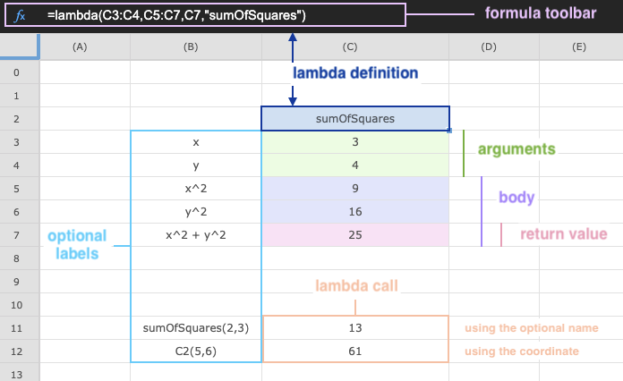

Lattice is our research spreadsheet tool, enhanced with sheet-defined lambdas.

In this video we demonstrate how to define a lambda in Lattice using an example of calculating the variance percentage.
The first example is the Sum of Squares. It refers to a statistical technique used in regression analysis to determine the dispersion of data points [1]
The second example is the conversion of Temperature from ℉ to ℃ using the formula: ℃ = [ (℉ - 32 ) × 5 ] ÷ 9
© This enhanced spreadsheet is based on ipgrid by Michael Roberg
© The favicon is by vectaicon - Flaticon